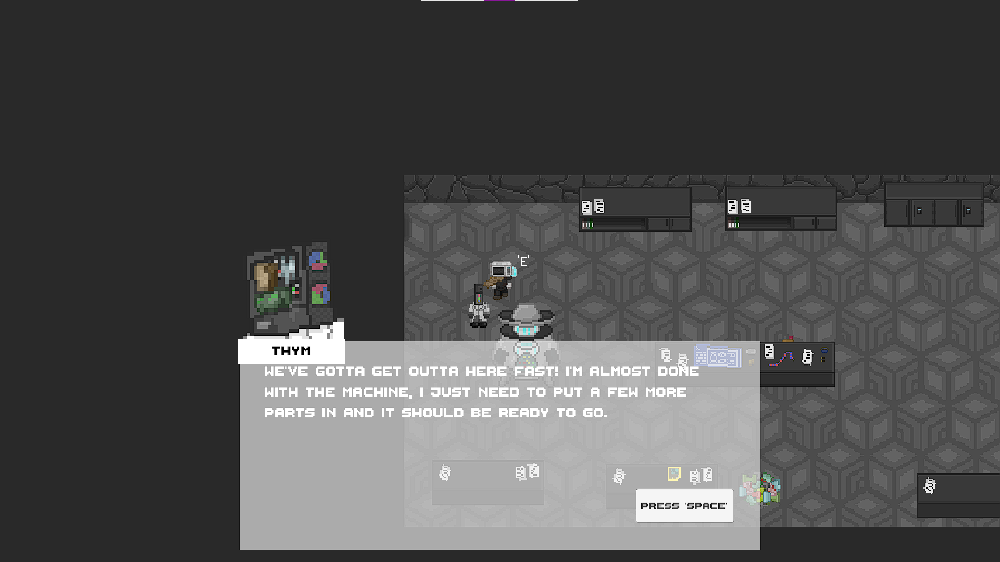

.png)

Poster art made by Khailil Tookas
The Kawaguchi corporation has just finished their latest and most terrible design, the World Oven. Global Warming incarnate, the World Oven has the ability to cook the entire planet at once, sealing the fates of all who’ve managed to survive this far. The Reheated Rebellion is the last bastion of hope, stationed at a base on the moon working to develop a technology of their own that could turn the tides.

Just before the rebellion is able to put their technology into action, Kawaguchi launches a massive attack on the moon base. A security guard who was guarding the secret project manages to make their way to the lab and help the lead scientist Thym on the project finish their secret weapon, a time machine. With it, they plan to stop Kawaguchi from ever rising to power by disrupting their company’s progress in the past. Using the newly completed time machine to escape, the guard and the scientist end up in an 1800’s coal mining town owned by one of the companies that eventually became a part of Kawaguchi.
Upon arriving in the town, Thym realizes that the trip was miscalculated and the machine is broken and will need to be repaired and recharged. The guard, M. Wave, goes out to find some way to recharge the machine while Thym fixes what he can. Unbeknownst to them, the Kawaguchi forces were able to piece together the leftover research notes and develop time travel capabilities of their own.
The action focused segments, such as when you are fighting through the attack on the moon base to reach Thym, are in a retro 2d action-platformer style. While currently very simple, more enemies and bosses are planned to be added, along with new player actions such as rewarding timing actions to a rhythm with faster movment.
The story focused sections on the other hand are top-down exploratory sections such as in Thym's lab and the coal town.

One of the most obviously unique aspects is the "Appliance-Punk" aesthetic. In a future where computing techology is expensive to attach and standard human bodies are too expensive to maintain, what we view as home appliances have become body parts. Get ready to see both people like M. Wave and Thym who have technological components as well as beings more mechanical than human like the Big Iron. But because most of the game is closer to present day there will be plenty of non-modified people like Coalton who you'll get to meet in the demo.